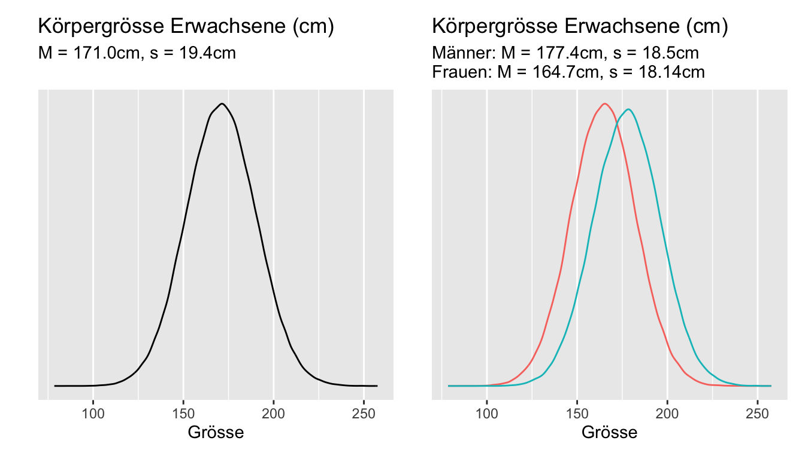
3 Grundlagen der Inferenzstatistik
3.1 Einleitung
Here’s some shocking information for you - sample statistics are always wrong!
— Jim Frost
Deskriptive Statistik und Inferenzstatistik sind die zwei Hauptkategorien in der Statistik.
Deskriptive Statistik …
- dient der Beschreibung von Daten in einem Datensatz, der z.B. durch eine Zufallsstichprobe entstanden ist. Die Ergebnisse werden nicht verallgemeinert.
- berechnet Kennzahlen zu den Daten aus einem Datensatz und stellt die Daten grafisch dar; verwendet zur Beschreibung der Daten Kennzahlen wie Mittelwert, Median, Standardabweichung, Interquartilsabstand oder Korrelationskoeffizient.
- arbeitet nur mit den vorliegenden Daten im Datensatz; daher besteht keine Unsicherheit im Hinblick auf die Gültigkeit von Kennzahlen.
Inferenzstatistik …
- arbeitet mit Daten, die durch die Untersuchung einer Zufallsstichprobe aus einer grösseren Population ermittelt wurden. Ihre Aufgabe ist es, Rückschlüsse auf die Population zu ziehen, aus der diese Daten stammen. Die Ergebnisse der Stichprobe werden also auf eine grössere Gruppe oder Population übertragen.
- benötigt als Grundlage eine repräsentative Stichprobe aus der Population. Am besten gelingt das, indem die Beobachtungseinheiten für die Stichprobe zufällig aus der Population ausgewählt werden (Zufallsstichprobe).
- schätzt die wahren Kennzahlen in der Population auf Grundlage der Stichproben-Kennzahlen. Da Schätzungen immer mit einer gewissen Ungenauigkeit verbunden sind, interessiert die Frage: “Wie sicher können wir sein, dass der geschätzte Mittelwert \(\bar{x}\) dem wahren Populationsmittelwert \(\mu\) entspricht?”.
- liefert Angaben, bis zu welchem Grad bzw. mit welcher Wahrscheinlichkeit wir unseren Schätzungen vertrauen können.
Die diesem Kapitel vorgestellten Grundlagen der Inferenzstatistik sind absolut essentiell für das Verständnis der nachfolgenden Themen. Es lohnt sich daher, für das Verständnis dieser Inhalte genügend Zeit zu investieren.
3.2 Lernziele
Important
Verwende eine Stichprobenkennzahl als Schätzung für einen Populationsparameter, z.B. wird der Stichprobenmittelwert verwendet um den Populationsmittelwert zu schätzen; beachte, dass Punktschätzer und Stichprobenkennzahl synonym sind.
Beachte, dass Punktschätzer (wie z.B. der Stichprobenmittelwert) von Stichprobe zu Stichprobe variieren. Diese Variabilität wird als Stichprobenvariation bezeichnet. Ein Punktschätzer auf Grundlage einer Stichprobe, wird in der Nähe des Populationsparameters liegen, aber es ist sehr unwahrscheinlich, dass er diesen exakt trifft. Diese Abweichung wird als Stichprobenfehler bezeichnet.
Berechne die Stichprobenvariation des Mittelwerts, den Standardfehler mit der Formel (\(\sigma\) ist die Standardabweichung des Merkmals in der Population)
\[\sigma_{\bar{X}} = \frac{\sigma}{\sqrt{n}}\]
- Da die Populationsstandardabweichung \(\sigma\) meistens nicht bekannt ist, verwenden wir die Standardabweichung \(s\) der Stichprobe, um diese Quantität zu schätzen, wir nennen sie dann SE: \[SE = \frac{s}{\sqrt{n}}\]
Unterscheide zwischen Standardabweichung \(s\) und Standardfehler \(SE\): Die Standardabweichung misst die Variabilität in den Stichprobendaten, während der Standardfehler die Variabilität von Punktschätzern aus verschiedenen Stichproben der gleichen Grösse und aus der gleichen Population misst. Mit anderen Worten: Der Standardfehler ist ein Mass für die Stichprobenvariation.
Erwarte, dass mit steigendem Stichprobenumfang die Stichprobenvariation abnimmt, da in der Formel zur Berechnung des Standardfehlers der Stichprobenumfang \(n\) im Nenner steht.
Intepretiere ein Konfidenzintervall (Vertrauensintervall, engl. confidence interval, Abk. \(CI\)) als glaubhaften Wertebereich für einen Populationsparameter.
Interpretiere das Konfidenzniveau (engl. confidence level) als den prozentualen Anteil von Zufallsstichproben, die Konfidenzintervalle ergeben, welche den wahren Populationsparameter enthalten.
Beachte, dass der zentrale Grenzwertsatz eine Aussage zur Verteilung von Punktschätzern erlaubt und, dass diese Verteilung annähernd normal ist, wenn die Voraussetzungen erfüllt sind.
Diese Voraussetzungen sind:
Annähernd Normalverteilung der Daten in der Population. Wenn die Verteilung in der Population unbekannt ist, kann diese Bedingung anhand eines Histogramms, eines Boxplots oder QQ-Plots überprüft werden.
Stichprobenumfang \(n\) > 30. Je grösser der Stichprobenumfang \(n\), desto unbedeutender wird die Verteilung, d.h. wenn \(n\) sehr gross ist, wird die Stichprobenverteilung nahezu normal sein, unabhängig von der Form der Verteilung in der Population.
Unabhängigkeit der Beobachtungseinheiten in einer Stichprobe: Die Unabhängigkeit der Beobachtungseinheiten kann sicher gestellt werden, indem diese zufällig ausgewählt werden (random sampling) und zufällig zu Gruppen zugeordnet werden (random assignment).
- Merke, dass für einen unbekannten Mittelwert \(\mu\)
bei beliebig verteilten Daten und \(n\) gross ein approximatives Konfidenzintervall berechnet werden kann gemäss: \[\bar{X} \pm z_{1-\frac{\alpha}{2}} \times SE\]
und bei normalverteilten Daten ein exaktes Konfidenzintervall berechnet werden kann gemäss: \[\bar{X} \pm t_{1-\frac{\alpha}{2},n-1} \times SE\]
mit \(z_{1-\frac{\alpha}{2}}\) als dem \(1-\alpha/2\)-Quantil der Standardnormalverteilung und \(t_{1-\frac{\alpha}{2},n-1}\) als dem \(1-\alpha/2\)-Quantil der \(t\)-Verteilung mit \(n-1\) Freiheitsgraden.
- Definiere bei der Berechnung des Konfidenzintervalls den Fehlerbereich (engl. margin of error, Abk. \(ME\)) als Abstand in beide Richtungen vom Punktschätzer, d.h.
\[ME = z_{1-\frac{\alpha}{2}} \times SE\]
- \(ME\) entspricht genau einer Hälfte der Breite des Vertrauensintervalls.
- Interpretiere ein Konfidenzintervall als: “Wir können zu XX% darauf vertrauen, dass der wahre Populationsparameter innerhalb dieses Intervalls liegt” (XX% ist das gewünschte Vertrauensniveau).
- Beachte, dass die Interpretation immer im Kontext der Daten erfolgen sollte; erwähne immer, auf welche Population und welchen Parameter sich eine Aussage bezieht.
Erläutere, inwiefern das Prinzip von Hypothesentests mit dem Vorgehen am Gericht vergleichbar ist.
Denke daran, dass wir bei Hypothesentests immer zwei sich gegenseitig ausschliessende Aussagen untersuchen:
- Die Nullhypothese \(H_0\) steht für den skeptischen Standpunkt (kein Unterschied)
- Die Alternativhypothese \(H_A\) ist die Gegenhypothese zur Nullhypothese (es gibt einen Unterschied).
- Beachte bei der Hypothesenbildung:
Hypothesen beziehen sich immer auf Populationsparameter (z.B. Populationsmittelwert, \(\mu\)) und nicht auf die Stichprobenkennzahlen (z.B. Stichprobenmittelwert, \(\bar{x}\)). Es ist absurd, bezüglich der Stichprobenkennzahl eine Hypothese zu bilden, da diese ja aus der Stichprobe bekannt ist.
Verstehe den Nullwert als den Wert eines Populationsparameters bzw. eines Referenzwertes, welcher der Nullhypothese entspricht.
Beachte, dass die Alternativhypothese \(H_A\) entweder einseitig (\(\mu\) > Nullwert oder \(\mu\) < Nullwert) oder zweiseitig formuliert werden kann (\(\mu \neq\) Nullwert). Die Wahl hängt von der konkreten Fragestellung ab. Wenn kein spezieller Grund für eine einseitige Alternativhypothese vorliegt, wähle und prüfe stets eine zweiseitige Alternativhypothese.
Um die Abweichung einer Stichprobe von der angenommenen Grundgesamtheit im Rahmen eines Hypothesentests zu messen, wird eine Teststatistik \(T\) (engl.: test statistic) berechnet.
Definiere den P-Wert als die Wahrscheinlichkeit – unter der Bedingung, dass die Nullhypothese in Wirklichkeit gilt – den beobachteten Wert \(t\) der Teststatistik \(T\) oder einen in Richtung der Alternativhypothese extremeren Wert zu erhalten.
- P Wert = \(P(T \geq t~|~H_0)\): einseitiger Test, z.B. rechtsseitig
- P Wert = \(P(|T| \geq |t|~|~H_0)\): zweiseitiger Test
Berechne einen P-Wert als Fläche unter der Standardnormalverteilung und der \(t\)-Verteilung (entweder auf eine Seite oder auf beide Seiten abhängig von der Alternativhypothese).Verwende zu diesem Zweck den beobachteten Wert der Statistik.
Verwerfe die Nullhypothese zugunsten der Alternativhypothese, wenn ein Konfidenzintervall den Nullwert nicht enthält.
Vergleiche den P-Wert mit dem Signifikanzniveau \(\alpha\) (typischerweise \(\alpha = 0.05\)), um zwischen den Hypothesen zu entscheiden:
Verwerfe die Nullhypothese zugunsten der Alternativhypothese, wenn der P-Wert kleiner als das Signifikanzniveau ist, da dies bedeutet, dass es sehr unwahrscheinlich ist, eine mindestens so extreme Teststatistik rein durch Zufall zu erhalten. Interpretiere das Ergebnis in dem Sinn, dass die Daten Evidenz für die Alternativhypothese liefern.
Verwerfe die Nullhypothese nicht, wenn der P-Wert grösser als das Signifikanzniveau ist, da dies bedeutet, dass es rein auf Zufall beruhen kann, eine mindestens so extreme Teststatistik zu erhalten. Interpretiere das Ergebnis so, dass die Daten keine Evidenz für die Alternativhypothese liefern.
Merke: Fehlende Evidenz gegen die Nullhypothese bedeutet nicht, dass die Nullhypothese wahr ist. Die Nullhypothese kann nie angenommen oder bewiesen werden, da das Prinzip von Hypothesentests dies nicht erlaubt. Absence of evidence is not evidence of absence
- Denke daran, dass es immer möglich ist, einen Entscheidungsfehler zu begehen:
Ein Fehler 1. Art bedeutet, dass die Nullhypothese verworfen wird, obwohl sie in Wirklichkeit wahr ist. Mit einem Signifikanzniveau von \(\alpha = 0.05\) nehmen wir in Kauf, dass dies bei einer von 20 Entscheidungen der Fall ist.
Ein Fehler 2. Art bedeutet, dass wir die Nullhypothese nicht verwerfen, obwohl in Wirklichkeit die Alternativhypothese wahr ist. Damit verpassen wir die Erfassung eines Effektes, wo einer in Wahrheit vorhanden ist.
- Beachte, dass die Wahrscheinlichkeit, einen Fehler 1. Art zu begehen dem Signifikanzniveau entspricht. Wähle das Signifkanzniveau so, dass es den Folgerisiken entspricht, die mit einem Fehler 1. oder 2. Art verbunden ist:
- Wähle ein kleineres \(\alpha\), wenn das Risiko einen Fehler 1. Art zu begehen, minimiert werden soll.
- Wähle ein grösseres \(\alpha\), wenn das Risiko einen Fehler 2. Art zu begehen, minimiert werden soll.
Definiere einen Effekt als Auswirkung oder als Folge einer Ursache. Wenn wir z.B. zwei Stichproben von Probanden mit und ohne Schlafmittel vergleichen und sich herausstellt, dass die Probanden mit dem Schlafmittel im Durchschnitt 1.5 Stunden länger schlafen, dann bezeichnen wir diese Differenz in der Schlafdauer zwischen den Gruppen als Effekt mit der Effektgrösse 1.5 Stunden.
Beachte, dass ein statistisch signifikanter Effekt nicht zwingend auch praktische Relevanz (Bedeutung) hat.
Berechne Standardfehler, P-Werte und Konfidenzintervalle unter Verwendung der \(z\)-Verteilung von Hand und in
R.
3.3 Grundbegriffe
3.3.1 Population
Im alltäglichen Sprachgebrauch besteht eine Population meist aus Menschen, z.B. die Einwohner:innen von Basel, Primarschüler:innen in einer Stadt oder Diabetiker:innen. In der Forschung können Populationen jedoch auch Objekte, Ereignisse, Firmen usw. sein. Zum Beispiel:
- Die Sterne der Milchstrasse
- Ein bestimmter Microchip für Handys
- Coronaviren SARS-CoV-2
- Hefekulturen in einer Brauerei
Je nach Fragestellung muss die Population sehr genau definiert werden, wenn man eine Studie durchführt. Dieser Aspekt wird im wissenschaftlichen Arbeiten bei der Behandlung der PICO-Fragestellung ausführlich besprochen.
Eine Subpopulation ist eine Untergruppe einer Population. So kann man die Population Bürger:innen der Schweiz in die Subpopulationen «Mann», «Frau» oder «höchster Schulabschluss» oder «sozialer Status» etc. oder Covid-19-Viren in die Subpopulationen Alpha (England), Beta (Südafrika), Gamma (Brasilien) und Delta (Indien) oder Omikron unterteilen. Die Einteilung in Subpopulationen ist v.a. dann von Bedeutung, wenn zwischen den Untergruppen systematische Unterschiede bestehen, wie das z.B. bei der Körpergrösse von Männern und Frauen der Fall ist (Abbildung 3.1 ).
3.3.2 Populationsparameter vs. Stichprobenkennzahl
Ein Parameter ist eine Kennzahl, die ein Merkmal einer ganzen Population beschreibt, z.B. ein Populationsmittelwert. Da es in der Regel nicht möglich ist, alle Beobachtungseinheiten einer Population zu messen, kennen wir Populationsparameter meist nicht. Obwohl wir Populationsparameter nicht messen können, existieren sie. Z.B. die durchschnittliche Körpergrösse aller Frauen in der Schweiz ist ein exakter Parameter, nur kennen wir diesen einfach nicht!
Populationsparameter werden mit griechischen Buchstaben, Stichprobenkennzahlen mit lateinischen Buchstaben gekennzeichnet (Ausnahmen bestätigen die Regel).
| Mass | Populationsparameter | Stichprobenkennzahl |
|---|---|---|
| Umfang | \(N\) | \(n\) |
| Mittelwert | \(\mu\) | \(\bar{x}\) |
| Standardabweichung | \(\sigma\) | \(s\) |
| Korrelation | \(\rho\) | \(r\) |
| Proportion | \(\pi\) | \(p\) |
In der Inferenzstatistik dienen Daten dazu, den Populationsparameter zu schätzen. Ein Schätzer ist dann eine Funktion der Daten, z.B. ist der Schätzer \(\hat{\mu}=\frac{1}{n}\sum{X}_i=\bar{X}\) eine Schätzer für \(\mu\), \(\hat{\mu}=\frac{1}{n}\sum{x}_i=\bar{x}\) ist dann der konkrete Schätzwert.
Eine solcher Schätzer ist also eine Zufallsvariable. Ein Schätzer wird mit einem Hut gekennzeichnet. Die Notation \(\hat{\mu}\) ist für Schätzer und Schätzwert dieselbe.
Punktschätzung verwenden den Schätzwert als “best guess” für einen Populationsparameter. Z.B. ist der Stichprobenmittelwert der beste Schätzwert für den Populationsmittelwert, \(\hat{\mu}=\bar{x}\). Wegen dem Stichprobenfehler gilt aber natürlich allgemein \(\hat{\mu}\neq \mu\).
Bei der Intervallschätzung ist das Ziel, einen Wertebereich anzugeben, in der mit einer gewissen (frequentistischen) Wahrscheinlichkeit der Populationsparameter liegt. Solche Wertebereiche beinhalten eine Fehlergrenze (Fehlerbereich, engl. margin of error, Abk. \(ME\)) und berücksichtigen auf diese Weise die Variabilität eines Schätzers. Wenn wir statistische Resultate lesen, sollten wir uns immer fragen, wie gross diese Ungenauigkeit ist. Leider wird in den Medien dieser Fehlerbereich sehr oft nicht angegeben, wodurch eine falsche Genauigkeit suggeriert wird, die fakisch gar nicht vorhanden ist.
3.4 Methoden der Inferenzstatistik
In diesem Kurs lernen wir fünf Methoden der Inferenzstatistik kennen:
Hypothesentests, Signifikanztests verwenden Stichprobendaten um Fragen bezüglich Populationsparametern zu beantworten. Z.B. ist der Populationsparameter grösser oder kleiner als ein bestimmter Wert oder unterscheiden sich die Parameter von zwei Populationen voneinander (Bsp. klinische Studie mit Interventions- und Kontrollgruppe).
Konfidenzintervalle (engl. confidence intervalls, Abk. \(CI\)) dienen der Schätzung von Populationsparametern und berücksichtigen die Unsicherheit (Ungenauigkeit) als Folge des Stichprobenfehlers. Sie geben einen Wertebereich an, in den der wahre Parameter mit einer gewissen Wahrscheinlichkeit fällt. Z.B. Ein 95%-Konfidenzintervall [176; 186] gibt an, dass wir zu 95% darauf vertrauen können, dass der wahre Populationsparameter innerhalb dieses Intervalls liegt.
Korrelations- und Regressionsanalysen beschreiben den Zusammenhang zwischen einer oder mehreren unabhängigen Variablen und einer abhängigen Variablen. Auch diese Analyse umfasst Hypothesentests, welche die Entscheidung ermöglichen, ob ein Zusammenhang zwischen zwei oder mehr Variablen in einer Stichprobe effektiv auch in der Population besteht.
Logistische Regressionsanalysen beschreiben den Zusammenhang zwischen einer oder mehreren unabhängigen Variablen und einer dichotomen abhängigen Variablen. Auch diese Analyse umfasst Hypothesentests, welche die Entscheidung ermöglichen, ob ein Zusammenhang zwischen zwei oder mehr Variablen in einer Stichprobe effektiv auch in der Population besteht.
Poisson-Regressionen beschreiben den Zusammenhang zwischen einer oder mehreren unabhängigen Variablen und einer diskreten abhängigen Variablen (Zähldaten). Auch diese Analyse umfasst Hypothesentests, welche die Entscheidung ermöglichen, ob ein Zusammenhang zwischen zwei oder mehr Variablen in einer Stichprobe effektiv auch in der Population besteht.
3.5 Stichprobenumfang und Fehlergrenze
Inferenzstatistik ist ein mächtiges Werkzeug, das uns erlaubt, aus relativ kleinen Stichproben etwas über eine ganze Population zu erfahren. Leider ist es jedoch so, dass auch wenn eine Studie akribisch genau durchgeführt wird, die Ergebnisse immer etwas verzerrt und unsicher sein werden (bezogen auf die wahren Populationsparameter). Weil eine Stichprobe eben nicht die gesamte Population ist, können Stichprobendaten nie zu 100% unverzerrt und präzis sein.
Das primäre Ziel der Inferenzstatistik ist es, von einer Stichprobe auf die Population zu verallgemeinern. Grosse Stichproben repräsentieren die Vielfalt einer Population besser als kleine Stichproben. Wenn wir zum Beispiel eine Studie zum Intelligenzquotienten durchführen und wir haben nur fünf Probanden zum testen, dann wird ein aussergewöhnlich hoher oder tiefer Wert den Stichprobenmittelwert erheblich beeinflussen. Wenn wir 50 Probanden untersuchen können, haben einzelne Extremwerte einen viel geringeren Einfluss.
3.5.1 Verteilung von Stichprobenkennzahlen
(Stichprobenverteilungen, engl. sampling distributions)
Für das Verständnis der Denkweise in der Statistik ist es ausserordentlich wichtig, sich vor Augen zu halten, dass wenn wir eine Zufallsstichprobe aus einer Population ziehen, diese Stichprobe nur eine von einer grossen Zahl möglicher Stichproben ist.
Zur Verdeutlichung führen wir ein simuliertes Experiment durch: Wir wissen, dass der IQ normalverteilt ist und, dass der Populationsmittelwert des IQ-Scores bei \(\mu = 100\) und die Standardabweichung bei \(\sigma = 15\) liegt. Jetzt ziehen wir je 1000 Stichproben aus der Population im Umfang \(n = 5\), \(n = 25\), \(n = 100\) und stellen die ermittelten Stichprobenmittelwerte als Histogramm dar.
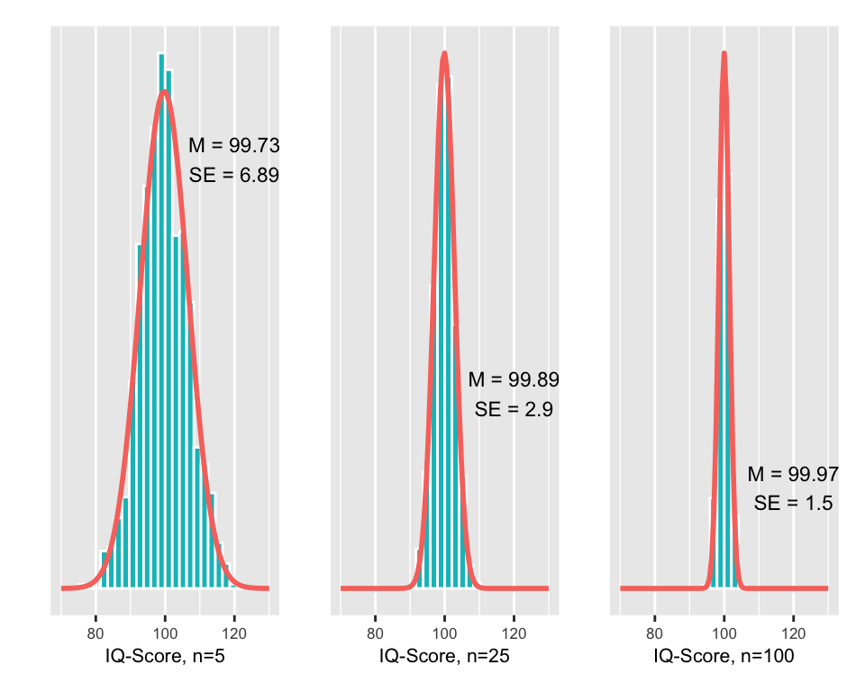
Was lernen wir aus diesem Experiment?
Jeder Stichprobenmittelwert liegt in der Nähe des wahren Populationsmittelwertes, aber es ist wenig wahrscheinlich, dass ein Stichprobenmittelwert exakt den wahren Populationsmittelwert trifft.
Je grösser die Stichprobe \(n\), desto näher liegen die geschätzten Mittelwerte beim wahren Populationsmittelwert. Mit anderen Worten: Je grösser der Stichprobenumfang \(n\), desto mehr können wir dem Stichprobenmittelwert vertrauen, dass er den wahren Populationsparameter repräsentiert.
Die Variabilität \(SE\) dieser Verteilungen entspricht dem Stichprobenfehler in Abhängigkeit vom Stichprobenumfang \(n\). Grössere Stichprobenumfänge weisen einen kleineren Fehlerbereich auf.
Die Stichprobenmittelwerte mehrerer Stichproben sind annähernd normalverteilt.
Was wir an unserem Beispiel nicht erkennen können ist, dass die Stichprobenverteilung der Mittelwerte selbst dann normalverteilt ist, wenn die zu Grunde liegende Verteilung der Populationsdaten nicht normal ist.
Im Experiment zum IQ-Score wird eine Verteilung für die Mittelwerte mehrerer Stichproben erstellt. Eine solche Stichprobenverteilung zeigt die Verteilung von Stichprobenkennzahlen (hier von Mittelwerten) mehrerer gleich grosser Stichproben aus einer bestimmten Population. Wie weiter unten erläutert, kann mit Hilfe eines mathematischen Tricks solche Stichprobenverteilungen aus einer einzigen Stichprobe geschätzt werden. Diese Verfahren bilden die theoretische Grundlage für Hypothesentests und Konfidenzintervalle.
3.6 Standardfehler des Mittelwertes
(engl. standard error, Abk. \(SE\))
Die einzelnen Stichprobenmittelwerte in unserem Experiment liegen mehr oder weniger in der Nähe des wahren Populationsmittelwerts. Die Streuung der einzelnen Werte einer Stichprobenverteilung kann mit Hilfe der Standardabweichung quantifiziert werden. Die Standardabweichung eines Stichprobenmittelwerts \(\bar{X}\) beschreibt, wie weit typischerweise eine bestimmte Kennzahl vom wahren Populationsparameter entfernt ist oder mit anderen Worten, den Fehler dieser Schätzung. Die Standardabweichung einer Punktschätzung wird als Standardfehler bezeichnet. Der Standardfehler ist ein Mass für die Ungenauigkeit, die auf Grund der Stichprobenvariation mit unserer Punktschätzung verbunden ist.
Was genau ist jetzt aber der Unterschied zwischen Standardabweichung und Standardfehler? Sowohl der Standardfehler als auch die Standardabweichung befassen sich mit dem Mittelwert einer Stichprobe, das ist das Gemeinsame, aber …
… der Standardfehler gibt Auskunft über die mittlere Abweichung des Mittelwerts einer Stichprobe vom tatsächlichen Mittelwert der Population; er beschreibt also die Beziehung zwischen Stichprobenkennzahl und Populationsparameter! Er ist die Standardabweichung eines Schätzers oder einer Statistik wie \(\bar{X}\).
… die Standardabweichung gibt uns Auskunft darüber, wie sehr die einzelnen Werte der Stichprobe um ihren Mittelwert streuen. Das ist die Standardabweichung von konkreten Daten.
Üblicherweise steht, v.a. aus ökonomischen Gründen, nur eine einzige Stichprobe zur Verfügung und es ist auf den ersten Blick nicht offensichtlich, wie der Standardfehler \(SE\) aus einer einzigen Stichprobe berechnet werden kann. Wenn wir uns noch einmal den drei Experimenten oben zuwenden, stellen wir fest, dass \(SE\) mit zunehmendem Stichprobenumfang kleiner wird: \(SE\) = 6.89 bei n = 5, \(SE\) = 2.9 bei n = 25 und \(SE\) = 1.94 bei n = 100.
Es besteht demnach eine Beziehung zwischen der Grösse des Standardfehlers \(SE\) und dem Stichprobenumfang \(n\). Bei einem Stichprobenumfang \(n\) aus einer Population mit der Standardabweichung \(\sigma\), ist der Standardfehler des Stichprobenmittelwerts \(\bar{X}\) gleich der geschätzten Standardabweichung von \(\bar{X}\),
\[ SE = \frac{s}{\sqrt{n}}. \]
In der Formel oben wurde \(s\) eingesetzt, weil \(\sigma\) geschätzt werden muss. Wäre \(\sigma\) bekannt, könnte man die Standardabeichung von \(\bar{X}\) exakt berechnen. \(SE\) dient also als Schätzer für \(\sigma_{\bar{X}}\).
3.6.1 Das Wurzel-n-Gesetz
Der Formel für die Berechnung des Standardfehlers \(SE\) ist zu entnehmen, dass sich dieser umgekehrt proportional zur Quadratwurzel des Stichprobenumfangs \(n\) verändert. Um also den Standardfehler beispielsweise zu halbieren, müsste daher den Stichprobenumfang vervierfacht werden.
| s | n | SE |
|---|---|---|
| 16 | 16 | 4 |
| 16 | 64 | 2 |
3.7 Der zentrale Grenzwertsatz
Bei unserem grundlegenden Schätzproblem kennen wir nun also den Mittelwert und die Varianz von unserem Schätzer \(\bar{X}\). Die Frage ist nun, wie \(\bar{X}\) verteilt ist. Dazu hilft uns der zentrale Grenzwertsatz.
ImportantZentraler Grenzwertsatz (engl. Central Limit Theorem, CLT)
Die Verteilung von Mittelwerten aus unabhängig gezogenen Stichproben der Grösse \(n\) aus einer Population mit Mittelwert \(\mu\) und Varianz \(\sigma^2\) nähert sich mit zunehmendem \(n\) einer Normalverteilung mit dem Mittelwert \(\mu\) und der Varianz \(\frac{\sigma^2}{n}\) an. Bei grossem \(n\) gilt dies auch dann, wenn das Merkmal selbst nicht normalverteilt ist. Etwas formaler:
\[ \bar{X} \overset{a}\sim \mathcal{N}(\mu, \frac{\sigma^2}{n}), \text{bei grossem }n. \]
\(SE^2\) dient als Schätzer für die Varianz \(\frac{\sigma^2}{n}\), welchen wir durch Einsetzen der empirischen Varianz \(s^2\) erhalten:
\[ SE^2 = \frac{s^2}{n} \to SE = \frac{s}{\sqrt{n}} \]
Gleiche Aussage für den standardisierten Schätzer
\[ \frac{\bar{X}-\mu}{SE} \overset{a}\sim \mathcal{N}(0,1), \text{bei grossem }n. \]
Hinweis: Die Online-App Central Limit Theorem for Means ermöglicht es, interaktiv verschiedene Szenarios durchzuspielen.
3.8 Konfidenzintervalle
(auch Vertrauensintervalle, engl. confidence intervalls, Abk. \(CI\))
Die Kennzahl aus einer Stichprobe, z.B. der Mittelwert, liefert uns einen einzigen Schätzwert für einen Populationsparameter. Wie wir gesehen haben, sind solche Punktschätzungen eigentlich nie perfekt und wir würden gerne wissen, in welchem Mass wir auf diesen Wert vertrauen können, um unser Ergebnis korrekt interpretieren zu können. Hier kommen die Vertrauensintervalle ins Spiel. Es liegt eigentlich nahe, dass wir an Stelle einer Punktschätzung ein Werteintervall angeben können, in dem der wahre Populationsparameter mit grosser Wahrscheinlichkeit liegt. Das wäre dann zwar scheinbar weniger präzis, dafür etwas zuverlässiger (siehe unten Präzision versus Sicherheit).
Da ein Punktschätzer aus einer Stichprobe der überzeugendste Wert für einen gesuchten Populationsparameter ist, macht es Sinn, dass ein Konfidenzintervall um diese Schätzung herum konstruiert wird. Der Standardfehler, als Mass für die Ungenauigkeit des Punktschätzers, liefert die Angabe, wie breit das Konfidenzintervall konstruiert werden soll.
3.8.1 Approximative Konfidenzintervalle
Wir wissen dass ein standardisierter Schätzer approximativ standardnormalverteilt ist, \[ T= \frac{\bar{X} - \mu}{SE} \overset{a}\sim \mathcal{N}(0,1). \]
Wenn \(X\) beliebig verteilt ist und \(n\) gross, dann ist die Wahrscheinlichkeit, dass \(T\) zwischen die Quantile \(z_{\alpha/2}\) und \(z_{1-\alpha/2}\) fällt: \[\begin{equation} \Pr\left(-z_{1-\alpha/2}\leq\frac{\bar{X}-\mu}{SE(\bar{X})}\leq z_{1-\alpha/2}\right)\approx 1-\alpha, \end{equation}\] und somit folgt durch Umformung, dass \[\begin{equation} \bar{X}\pm z_{1-\alpha/2}\cdot SE (\bar{X}) \end{equation}\] ein approximatives \((1-\alpha)\times 100\)-% Konfidenzintervall für \(\mu\) darstellt.
Mit der Irrtumswahrscheinlichkeit \(\alpha\) setzten wir a priori die Wahrscheinlichkeit, dass ein so konstruiertes Konfidenzintervall \(\mu\) nicht überdeckt. Ein solches Intervall überdeckt folglich \(\mu\) mit \(1-\alpha\) frequentistischer Wahrscheinlichkeit. Wenn \(\alpha=0.05\), dann ist das \((1-\alpha/2)\)-Quantil=1.96 (qnorm(0.975)), und wir haben dann ein 95% Konfidenzintervall für \(\mu\): \[\begin{equation}
\boxed{\bar{X}\pm 1.96 \cdot SE (\bar{X})}
\end{equation}\]
Demnach ist die Wahrscheinlichkeit 0.95, dass die Statistik \(T\) zwischen dem 2.5%- und 97.5%-Quantil liegt:
Mit qnorm() erhalten wir diese Quantile:
qnorm(c(0.025, 0.975))[1] -1.959964 1.959964Für die Zufallsvariable \(\bar{X}\) setzen wir dann den konkreten Schätzwert \(\bar{x}\) ein.
Man kann beliebige CI’s berechnen, in dem man auf der Standard-Normalverteilung die entsprechenden Quantile nachschaut. Für ein 90%-CI sind die Quantile:
qnorm(c(0.05, 0.95))[1] -1.644854 1.6448543.8.2 Exakte Konfidenzintervalle bei Normalverteilung
Bei beliebig verteiltem Merkmal in der Population und \(n>30\) ist die Statistik (standardisierter Schätzer) \(T=\frac{\bar{X}-\mu}{SE}\) gemäss dem zentralen Grenzwertsatz approximativ standardnormalverteilt.
Ist \(n<30\), so ist aber zu fordern, dass das Merkmal \(X\) in der Population normalverteilt ist. Gilt diese Voraussetzung, dann ist die Statistik \(T\) exakt \(t\)-verteilt mit \(n-1\) Freiheitsgraden. Wir ersetzen dann das 0.975-Quantil der \(z\)-Verteilung durch das 0.975-Quantil der \(t\)-Verteilung mit dem entsprechenden Freiheitsgrad \(df=n-1\) (\(df\): degrees of freedom).
Das exakte Konfidenzintervall ist dann für Irrtumswahrscheinlichkeit \(\alpha=0.05\): \[\begin{equation} \bar{X}\pm t_{0.975,n-1}\cdot{\frac{s}{\sqrt{n}}}, \end{equation}\] mit \(t_{0.975,n-1}\) als dem 0.975-Quantil der \(t\)-Verteilung mit \(n-1\) Freiheitsgraden.
- Beispiel: Für ein 95% CI bei \(df = 29\) sind die Quantile
qt(c(0.025, 0.975), df = 29)[1] -2.04523 2.04523CI’s basierend auf der \(t\)-Verteilung sind breiter als mit der \(z\)-Verteilung.
Bereits aus der 68-95-99.7-Regel wissen wir, dass ca. 95% der Daten innerhalb von etwa vier (\(\pm 2\)) Standardabweichungen liegen (genau genommen sind es eben 1.96, siehe oben). Dasselbe gilt für Schätzer (wobei SD jetzt ein SE ist). Damit können wir davon ausgehen, dass in ca. 95% der Fälle, der wahre Parameter innerhalb von \(\pm 2 \times SE\) liegt. Wenn also die Breite eines Konfidenzintervalls plus/minus 2 Standardfehler zum Punktschätzer umfasst, dürfen wir zu 95% darauf vertrauen, dass dieses den wahren Populationsparameter enthält.
Was bedeutet aber “zu 95% darauf vertrauen können”? Wenn viele Stichproben mit dem gleichen Stichprobenumfang aus einer Population gezogen werden und für jede Stichprobe das 95%-Konfidenzintervall bestimmt wird, dann werden im Durchschnitt 95% aller dieser Konfidenzintervalle den wahren Populationsparamter enthalten.
Kommen wir auf unser IQ-Score-Experiment zurück. Wir ziehen nochmals 25 Stichproben im Umfang \(n\) = 50 und konstruieren für jede Stichprobe das 95%-Konfidenzintervall für den IQ-Score.
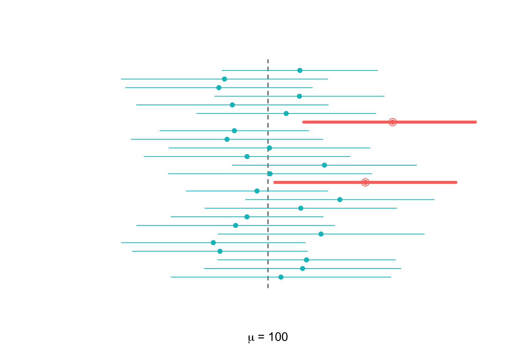
Von den 25 Stichproben enthalten in Abbildung 3.3 zwei (= 8%) den wahren Populationsmittelwert nicht. 8% ist etwas höher als erwartet. Allerdings ist zu berücksichtigen, dass wir das Experiment nur 25 Mal wiederholt haben. Mit weiteren Wiederholungen würde sich der Anteil, der 95%-Konfidenzintervalle, die den Populationsparameter nicht enthalten immer mehr bei 5% einpendeln (Gesetz der grossen Zahlen).
Da der Standardfehler \(SE\) mit zunehmendem Stichprobenumfang \(n\) abnimmt, hat der Stichprobenumfang \(n\) einen grossen Einfluss auf die Breite von Konfidenzintervallen.
Tipp: Web-App Seeing Theory: Confidence Intervalls.
- Wähle \(Normal\) für Normalverteilung
- Stelle mit dem Regler das Konfidenzniveau \(1-\alpha\) = 0.95
- Beachte den Einfluss des Stichprobenumfangs auf die Breite der Konfidenzintervalle.
- Welchen Einfluss hat die Veränderung des Konfidenzniveaus \(1-\alpha\) auf die Breite der Konfidenzintervalle?
Erkenntnis:
- Je höher der Stichprobenumfang pro Stichprobe ist, desto schmaler werden die Konfidenzintervalle.
- Je höher das Konfidenzniveau wird, desto breiter werden die Konfidenzintervalle.
3.8.3 Anpassung des Konfidenzniveaus
Konfidenzintervalle haben eine untere und eine obere Grenze. In der Mitte steht die Stichprobenkennzahl als Schätzer für den Parameter, z.B. \(\bar{x}\). Die untere Grenze des Vertrauensintevalls wird berechnet als \(\bar{x} - Fehlerbereich ~ME\) und die obere Grenze \(\bar{x} + Fehlerbereich~ ME\).
\[ME = z \times SE\]
In der Formel zum 95%-Konfidenzintervall haben wir das 0.975-Quantil der \(z\)-Verteilung, \(z_{0.975}\approx 2\), eingesetzt. Möglicherweise sind 95%-Vertrauensintervalle zu unsicher und man möchte eine grössere Zuverlässigkeit (kleinere Irrtumswahrscheinlichkeit) haben. In diesem Fall wird das Konfidenzniveau auf z.B. 99% erhöht (Irrtumswahrscheinlichkeit gesenkt). Es kann jedoch sein, dass keine so grosse Zuverlässigkeit erforderlich ist, dann kann das Konfidenzniveau auf z.B. 90% gesenkt werden. Das gewünschte Konfidenzniveau hat einen Einfluss auf den Fehlerbereich ME, der toleriert wird und somit auf den Faktor, mit dem der Standardfehler multipliziert werden muss.
Important
Allgemein berechnen wir ein \((1-\alpha)\times 100\) % CI für den Parameter \(\mu\):
für ein approximatives Konfidenzintervall \[\begin{equation} \bar{x}\pm z_{1-\alpha/2}\cdot{\frac{s}{\sqrt{n}}} \end{equation}\]
für ein exaktes Konfidenzintervall (bei Normalverteilung)
\[\begin{equation} \bar{x}\pm t_{1-\alpha/2,n-1}\cdot{\frac{s}{\sqrt{n}}} \end{equation}\]
Dabei sind die \(t\) und \(z\) die jeweiligen \((1-\alpha/2)\)-Quantile. Üblich sind Konfidenzintervalle von 90%, 95% und 99%, für approximative CI’s (\(t\)-Quantile hängen dann noch von \(n\) ab).
| \(\alpha/2\) | Konfidenzniveau \(1-\alpha\) | \(z_{1-\frac{\alpha}{2}}\) |
|---|---|---|
| .05 | .9 = 90% | 1.645 |
| .025 | .95 = 95% | 1.96 |
| .005 | .99 = 99% | 2.58 |
Anmerkungen:
- Eine weitere Erklärung zur Bedeutung des Signifikanzniveaus (oder der Irrtumswahrscheinlichkeit \(\alpha\)) folgt weiter unten. Man kann hier schon ahnen, dass \(\alpha\) etwas mit dem Fehler zu tun hat, den wir bereit sind, in Kauf zu nehmen.
- Zur Schätzung des 95%-Bereichs kann in der Praxis der Faktor 2 verwendet werden, genauer ist aber 1.96.
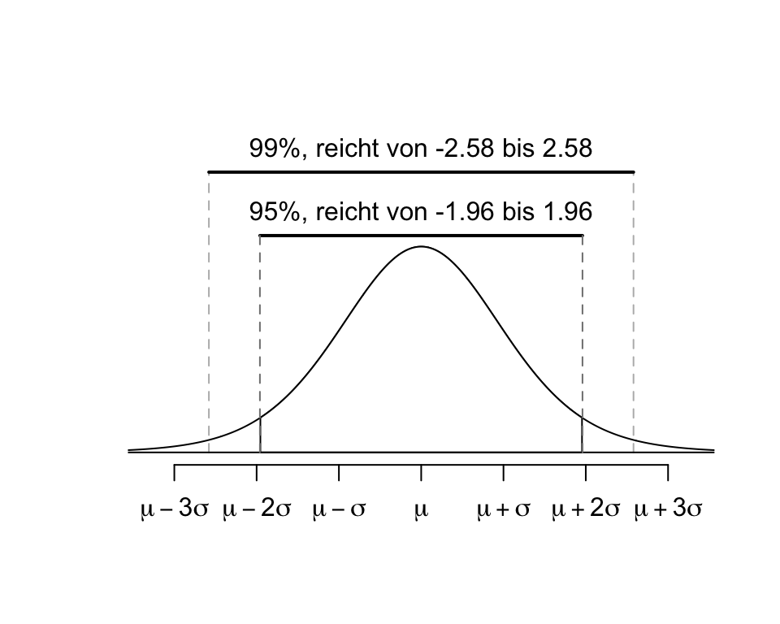
Die Abbildung 3.4 zeigt, dass mit grösserem \(z\) die Fläche zwischen \(-z\) und \(+z\) grösser wird. Für das 99% Konfidenzintervall wurde \(z\) so gewählt, dass 99% der Fläche unter der Kurve zwischen \(-z\) und \(+z\) liegt. Es ist logisch, dass, je sicherer wir sein wollen, dass das Konfidenzintervall den wahren Parameter enthält, desto breiter muss es sein. Analog lassen sich Konfidenzintervalle anhand der \(t\)-Verteilung berechnen. Man setzt statt dem \(z\)-Wert einfach den \(t\)-Wert mit den entsprechenden Freiheitsgraden \(df = n - 1\) ein.
3.8.4 Präzision versus Sicherheit
Es besteht ein direkter Zusammenhang zwischen der Genauigkeit eines Konfidenzintervalls und seiner Zuverlässigkeit. Enge Konfidenzintervalle bedeuten hohe Präzision der Schätzung. Wenn wir die Formel zur Berechnung von Konfidenzintervallen betrachten, erkennen wir, dass drei Variablen die Grösse des Fehlerbereichs ME bestimmen:
die Standardabweichung \(s\) der Stichprobenkennzahl: je grösser \(s\), desto breiter das Konfidenzintervall.
der Stichprobenumfang \(n\): je grösser \(n\), desto enger ist das Konfidenzintervall.
die Wahl vom entsprechenden Quantil der \(t\)- oder \(z\)-Verteilung: die Wahl eines kleineren Quantils ergibt ein engeres Konfidenzintervall als die Wahl eines grösseren Quantils. Allerdings ist das Konfidenzniveau bei einem kleinerem Quantil auch geringer als bei einem grösseren Quantil. Wählen wir z.B. das 0.95-Quantil (\(Q_{0.95}=1.645\)) können wir nur zu 90% darauf vertrauen, dass der wahre Populationsparameter im Konfidenzintervall liegt. Wählen wir jedoch \(Q_{0.975}=1.96\), wird zwar der Fehlerbereich grösser (weniger Präzision), dafür steigt das Konfidenzniveau auf 95% (mehr Zuverlässigkeit).
3.8.5 Voraussetzungen
Wichtige Voraussetzungen dafür, dass die Stichprobenverteilung von \(\bar{X}\) annähernd normalverteilt ist und dass die Schätzung für den Standardfehler \(SE\) bei unbekanntem \(\sigma\) – und das praktisch immer der Fall – genügend genau ist, sind:
Die einzelnen Beobachtungseinheiten der Stichprobe sind unabhängig voneinander.
Der Stichprobenumfang ist gross: \(n > 30\). Dann ist die Stichprobenverteilung des Mittelwerts approximativ normalverteilt (nach dem zentralen Grenzwertsatz), auch wenn die Grundgesamtheit nicht normalverteilt ist.
Der Stichprobenumfang ist klein. Wenn die Grundgesamtheit normalverteilt ist (\(X\) normalverteilt), dann ist die Stichprobenstatistik exakt \(t\)-verteilt. Wenn die Grundgesamtheit nicht normalverteilt ist, sind robuste Methoden oder nichtparametrische Verfahren erforderlich.
Der Stichprobenumfang ist gross und \(X\) ist normalverteilt. Dann ist die Stichprobenstatistik ebenfalls exakt \(t\)-verteilt, wobei die Approximation zur Normalverteilung sehr gut ist.
Die Grundgesamtheit sollte nicht stark asymmetrisch oder ausreisserbehaftet sein. Diese Bedingung ist im Einzelfall oft schwer zu beurteilen und sollte ggf. durch grafische oder statistische Diagnostik unterstützt werden (z.B. Histogramm, Q-Q-Plot).
Wie kann man sicher sein, dass die Beobachtungseinheiten in der Stichprobe voneinander unabhängig sind?
- Wenn die Beobachtungseinheiten aus einer Zufallsstichprobe (randomisierte Zuteilung) stammen und weniger als 10% der Gesamtpopulation umfassen, dann dürfen wir annehmen, dass sie unabhängig sind.
- Beobachtungseinheiten in einer Studie gelten als unabhängig, wenn sie zufällig ausgewählt wurden und randomisiert den Gruppen (z.B. Interventions- und Kontrollgruppen) zugeteilt werden.
3.8.6 Interpretation von Konfidenzintervallen
Aufmerksamen Leser:innen mag aufgefallen sein, dass die sprachliche Formulierung von Konfidenzintervallen etwas holprig tönt:
Wir können zu XX% darauf vertrauen, dass der wahre Populationsparameter zwischen … und … liegt.
De facto bedeutet dies, dass wenn wir 100 Stichproben mit dem gleichen Stichprobenumfang aus einer Population ziehen, werden im Durchschnitt XX Stichproben den wahren Populationsparameter enthalten.
Bei der Formulierung von Konfidenzintervallen kommt es häufig zu zwei typischen Fehlern:
Zu sagen, dass ein Konfidenzintervall mit einer subjektiven Wahrscheinlichkeit von XX% den Populationsparameter enthält ist nicht ganz korrekt. Das einzelne Konfidenzintervall enthält den Populationsparameter oder nicht, wir wissen es einfach nicht, aber wir können zu XX% darauf vertrauen. Das ist ein sehr subtiler sprachlicher Unterschied. Wenn wir aber betonen, dass es sich dabei um eine frequentistische Wahrscheinlichkeit (“on the long run”) handelt, dann ist die Aussage korrekt.
Zu sagen, dass XX% der Populationsdaten in das Konfidenzintervall fallen, ist falsch. Das Konfidenzintervall bezieht sich ausschliesslich auf den gesuchten Populationsparameter und nicht auf die Populationsdaten!
3.9 Hypothesen in der Statistik
Wir beginnen mit der Frage, ob Studierende heute öfter ins Krafttrainig gehen als vor 10 Jahren. Aus einer räpresentativen Umfrage ist bekannt, dass Studierende im Jahr 2010 im Schnitt an 3.01 Tagen trainierten, wir nennen diesen Referenzwert \(\mu_0\), also \(\mu_0=3.01\). Es liegen uns Daten von einer Studie aus dem Jahr 2020 vor, welche u.a. die Frage bearbeitet haben “Wie oft pro Woche gehen Studierende ins Krafttraining”. Unsere Hypothesen könnten lauten:
\(H_0:\) Die durchschnittliche Anzahl Krafttrainings der Studierenden in 2020 ist \(\mu_0\).
\(H_A:\) Die durchschnittliche Anzahl Krafttrainings der Studierenden in 2020 ist ungleich \(\mu_0\).
\(H_0\) bezeichnen wir als Nullhypothese, \(H_A\) als Alternativhypothese. In der Regel steht die Nullhypothese für einen skeptisch-konservativen Standpunkt: Es gibt keinen Unterschied. Die Alternativhypothese ist dagegen der Standpunkt der eine neue Perspektive eröffnet und die Möglichkeit in Betracht zieht, dass ein Unterschied besteht.
Die wissenschaftliche Position ist grundsätzlich eine skeptische. Das bedeutet, dass die Nullhypothese \(H_0\) nicht verworfen wird, es sei dann es bestehe starke Evidenz gegen \(H_0\). In diesem Fall wird \(H_0\) zu Gunsten von \(H_A\) verworfen.
Dieses Prinzip wird auch in der Rechtssprechung angewandt. Ein Angeklagter gilt so lange als unschuldig (\(H_0\) = Unschuldsvermutung), bis mit ausreichender Evidenz das Gegenteil (\(H_A\)) bewiesen ist. Auch wenn ein Angeklagter frei gesprochen wird (\(H_0\) wird nicht verworfen) ist es möglich, dass er schuldig ist, aber die Beweislage war in diesem Fall ungenügend. Daher gilt
Auch wenn wir die Nullhypothese nicht verwerfen können, heisst das nicht, dass wir sie als wahr akzeptieren. Sie ist einfach weiterhin plausibel.
3.9.1 Mathematische Formulierung von Hypothesen
Damit Hypothesen mit statistischen Methoden überprüft werden können, müssen sie zuerst mathematisch formuliert werden. Im Beispiel zur Trainingshäufigkeit von Studierenden haben wir die Null- und die Alternativhypothese bereits sprachlich formuliert und können sie jetzt im Hinblick auf die statistische Auswertung mathematisch formulieren. Die Quantität von Interesse wäre hier ein Zwischengruppenunterschied \(\delta\). Mögliche Hypothesen sind:
Ungerichtet: Gleich versus Ungleich
\(H_0: \mu_{2020}=\mu_0\) vs.
\(H_A: \mu_{2020}\neq \mu_0\)
Gerichtet: Kleiner versus Grösser
\(H_0: \mu_{2020}\leq \mu_0\) vs.
\(H_A: \mu_{2020}>\mu_0\)
Gerichtet: Grösser versus Kleiner
\(H_0: \mu_{2020}\geq \mu_0\) vs.
\(H_A: \mu_{2020}<\mu_0\)
Ein Fehler, der häufig bei der mathematischen Formulierung von \(H_0\) und \(H_A\) gemacht wird ist:
\(H_0: \bar{x} = 3.01\)
\(H_A: \bar{x} \neq 3.01\)
Warum ist das falsch? Weil bei der Formulierung der Hypothesen nicht für die Stichprobenmittelwerte interessieren, sondern die Populationsparameter! Für die Stichprobenmittelwerte brauchen wir ja keine Hypothesen, die sind bekannt: entweder die beiden Stichprobenkennzahlen sind identisch (was kaum zu erwarten ist) oder sie unterscheiden sich.
In der Umgangssprache und in der medizinischen Diagnostik hat der Begriff Hypothese eine etwas andere Bedeutung: Wir verwenden ihn, wenn wir eine Vermutung oder eine Annahme über die Ursache eines Zustands oder Ereignisses haben. Aus der Perspektive der Statistik handelt es sich dabei typischerweise um eine Alternativhypothese. Im Unterschied zu Hypothesen im Alltag muss eine Hypothese in der Wissenschaft prüfbar, d.h. falsifizierbar sein. In der statistischen Praxis empfiehlt es sich daher, die Null- und Alternativhypothese immer mathematisch zu formulieren.
3.9.2 Hypothesen mittels Konfidenzintervallen prüfen
Betrachten wir die Ergebnisse der Studie aus dem Jahr 2020. An wie vielen Tagen haben die Studierenden in der Stichprobe (n = 92) pro Woche durchschnittlich trainiert?
| n | mean | sd |
|---|---|---|
| 92 | 2.79 | 2.6 |
2010 haben die Studierenden durchschnittlich an 3.01 Tagen und 2020 an 2.79 Tagen trainiert. Es sieht demnach so aus, dass die Studierenden 2020 im Durchschnitt etwas seltener ins Training gingen, als die Studierenden in 2010. Die Quantität von Interesse ist jetzt ein wahres Mittel \(\mu_{2020}\):
\(H_0: \mu_{2020} = \mu_0\)
\(H_A: \mu_{2020} \neq \mu_0\)
Der Mittelwert aus 2010 ist in dieser Fragestellung Nullwert (Die Nullhypothese ist gültig wenn \(\mu_{2020}=\mu_0\))
\(H_0: \mu_{2020} = 3.01\)
\(H_A: \mu_{2020} \neq 3.01\)
Die Berechnung des approximativen 95%-Konfidenzintervalls für den Mittelwert aus 2020 ergibt:
\(CI_{95} = \bar{x} \pm 1.96 \times \frac{s}{\sqrt{n}}\)
\(CI_{95} = 2.79 \pm 1.96 \times \frac{2.6}{\sqrt{92}}\)
### R-Code
nullvalue <- 3.01
m <- 2.79
s <- 2.6
n <- 92
SE <- s/sqrt(n)
z <- 1.96
ME <- z * SE
# 95%-CI berechnen
ci <- m + c(-1, 1) * ME
# 95%-CI auf zwei Nachkommastellen runden und ausgeben
ci <- round(ci, 2)
print(paste("95%-CI [", ci[1], "; ", ci[2], "]", sep = ""))[1] "95%-CI [2.26; 3.32]"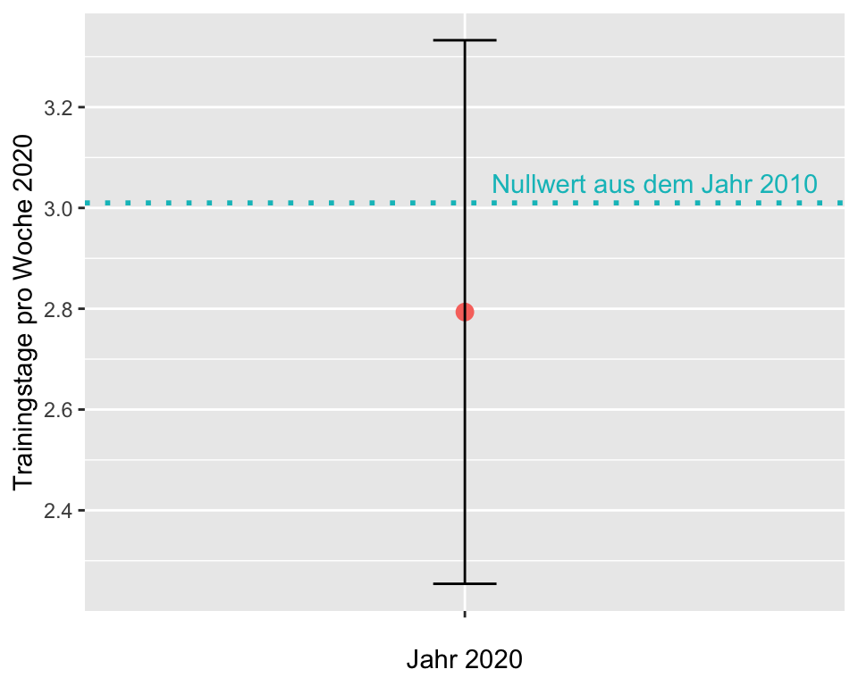
Intepretation: Das 95%-Konfidenzintervall für den Stichprobenmittelwert 2020 ist [2.26; 3.32]. Wir können zu 95% darauf vertrauen, dass die durchschnittliche Anzahl Trainings, welche die Studierenden von 2020 besuchten zwischen 2.26 und 3.32 lag. Dieses Vertrauensintervall beinhaltet den Referenzwert von 2010 (Nullwert). Das heisst, dieser Wert ist auch für die Studierenden von 2020 durchaus plausibel. Es liegt daher keine Evidenz dafür vor, dass \(H_0\) verworfen werden kann.
Merke: Wenn ein Konfidenzintervall den Nullwert beinhaltet, liegt keine ausreichende Evidenz dafür vor, dass \(H_0\) verworfen werden kann.
3.9.3 Entscheidungsfehler
Kommen wir noch einmal zurück zum Beispiel am Gericht: Die Aufgabe des Gerichts ist es, ein Urteil über den Angeklagten zu fällen. Auf Grund der Unschuldsvermutung gilt:
\(H_0:\) Der Angeklagte ist unschuldig.
\(H_A:\) Der Angeklagte ist schuldig.
Die Anklage wird im Laufe des Verfahrens Hinweise auf die Schuld des Angeklagten präsentieren. Sein Verteidiger wird entlastende Argumente vorbringen. Irgendwann kommt dieses Argument- und Gegenargument-Spiel zu Ende und das Gericht muss ein Urteil fällen. Da in vielen Fällen die Fakten nicht ganz eindeutig sind (man nennt das juristisch einen Indizienfall), besteht die Möglichkeit, dass das Gericht zu einem Fehlurteil kommt. Vier verschiedene Urteile sind möglich:
| H0 nicht verwerfen | H0 zugunsten HA verwerfen | |
|---|---|---|
| H0 ist wahr | richtige Entscheidung, \(1-\alpha\) | Fehler 1. Art, \(\alpha\) |
| HA ist wahr | Fehler 2. Art, \(\beta\) | richtige Entscheidung, \(1-\beta\) |
Ist der Angeklagte in Wahrheit …
- unschuldig und wird vom Gericht freigesprochen, ist das Urteil korrekt.
- schuldig und wird vom Gericht verurteilt, ist das Urteil korrekt.
- unschuldig, wird aber vom Gericht verurteilt, ist das ein Fehlurteil (Fehler 1. Art).
- schuldig, wird aber vom Gericht freigesprochen, ist das ein Fehlurteil (Fehler 2. Art).
Wie im Gericht müssen in der Statistik Entscheide getroffen werden, auch wenn die Datenlage meist nicht eindeutig ist. Unser Wissen ist immer unsicher, weil wir nie alle Daten haben, und es ist, wie am Gericht, nahezu unvermeidbar, dass wir Fehlentscheide treffen.
- Fehler 1. Art, \(\alpha\)-Fehler: \(H_0\) wird zugunsten \(H_A\) verworfen, obwohl \(H_0\) wahr ist. Es besteht vermutlich Einigkeit darüber, dass dies ein schwerwiegender Fehler ist. Er bedeutet am Gericht, dass ein Unschuldiger eine Strafe verbüssen muss. In der Medizin kann das bedeuten, dass eine teure Therapie, die in Wirklichkeit völlig nutzlos ist, eine Zulassung erhält und die Gesundheitskosten belastet. Diesen Fehler kennen wir schon als Irrtumswahrscheinlichkeit im Zusammenhang mit Konfidenzintervallen.
- Fehler 2. Art, \(\beta\)-Fehler: \(H_0\) wird nicht verworfen, obwohl \(H_A\) wahr ist. Auch dieser Fehlerentscheid ist unschön, aber wir stimmen Sir William Blackstone vermutlich zu, dass er weniger schwerwiegende Folgen hat, als ein Fehler 1. Art.
3.9.4 Signifikanzniveau
Jeder Entscheid birgt das Risiko eines Fehlentscheids. Bei der Erläuterung der Hypothesentests haben wir etwas schwammig formuliert, dass \(H_0\) verworfen wird, wenn starke Evidenz für \(H_A\) vorliegt. Was aber bedeutet stark? Als Faustregel gilt, dass wir bereit sind, in nicht mehr als 5% der Fälle, bei denen \(H_0\) effektiv wahr ist, die Nullhypothese fälschlicherweise zurückzuweisen. Oder anders formuliert: Wir erlauben uns einen Fehler 1. Art bei 5% der Entscheidungen bezüglich \(H_0\). Diese (willkürlich) festgelegte Grenze wird als Signifikanzniveau bezeichnet. Oft wird das Signifikanzniveau mit dem griechischen Buchstaben \(\alpha\) angegeben und wir schreiben: \(\alpha = 0.05\).
Das Signifikanzniveau, gibt an, wie hoch das Risiko ist, das man bereit ist einzugehen, einen Fehler 1. Art zu begehen.
In den meisten Studien im Gesundheitsbereich wird ein Wert für \(\alpha=0.05\) verwendet. Diese Entscheidungsgrenze bei der Entwicklung der Studienmethodik festgelegt und ist gewissermassen willkürlich. Je nach Fragestellung kann auch \(\alpha=0.1\) oder \(\alpha=0.01\) festgelegt werden. Je kleiner \(\alpha\), desto schwieriger ist es, \(H_0\) zu verwerfen.
Wenn wir bei einem Hypothesentest zum Testen von \(H_0\) ein 95%-Konfidenzintervall verwenden, können wir einen Entscheidungsfehler begehen, wenn ein Punktschätzer > 1.96 Standardabweichungen vom Populationsmittelwert entfernt ist. Bei \(\alpha=0.05\) passiert uns das in ca. 5% der Fälle (2.5% auf beiden Seiten der Kurve, wenn die Alternativhypothese ungerichtet ist).
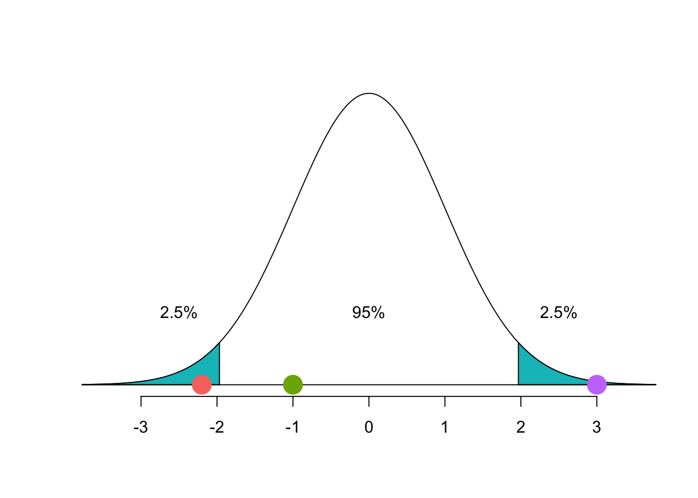
Die Kurve in Abbildung 3.6 zeigt die Verteilung der Daten unter \(H_0\). Die beiden blauen Flächen am Ende der Kurve ergeben zusammen einen Verwerfungsbereich für \(H_0\) von 5%. Liegt der Punktschätzer im Verwerfungsbereich (roter Punkt \(z\) = -2.2, violetter Punkt \(z\) = +3), verwerfen wir die \(H_0\) mit einem Risiko von 5%, d.h. 5 von 100 sochlen Entscheidungen gegen \(H_0\) sind dann falsch, weil unter \(H_0\) gerade 5 Prozent der Teststatistiken in diese Zone fallen.
Important
Damit wir eine statistische Hypothese verwerfen können, sind wir gezwungen, eine Fehlerrate zu akzeptieren, da unter \(H_0\) auch extreme Teststatistiken möglich sind. Mit \(\alpha=0\) machen wir keine Fehler, aber wir entscheiden auch nie gegen \(H_0\).
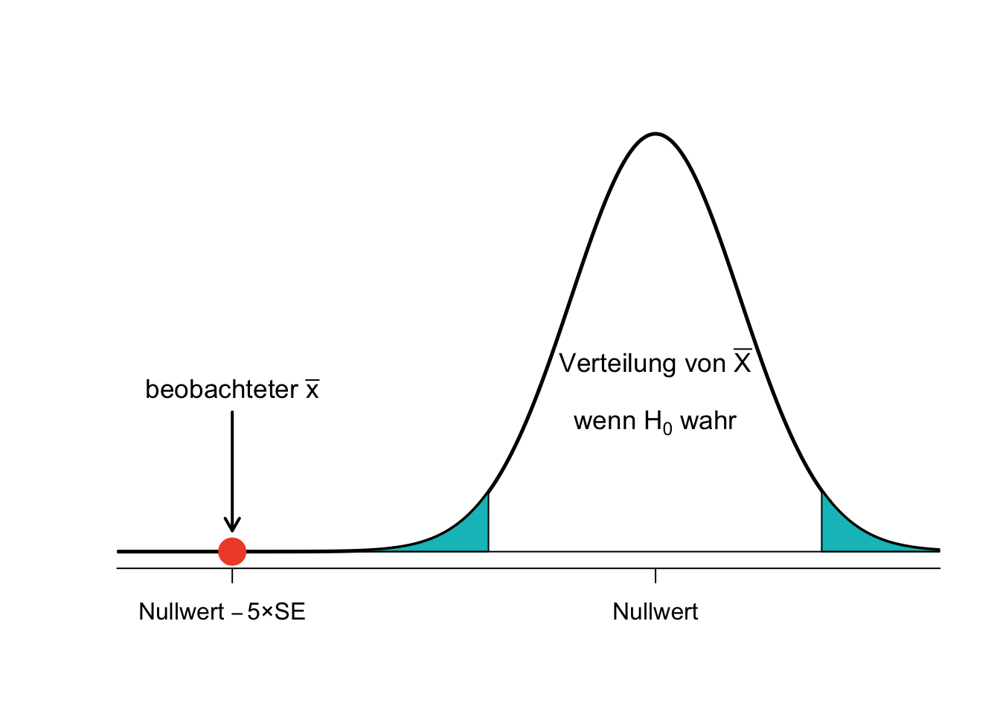
Im abgebildeten Fall (Abbildung 3.7 ) liegt der Punktschätzer 5 Standardfehler vom wahren Mittelwert der Verteilung unter der Nullhypothese entfernt. Dies bedeutet starke Evidenz gegen \(H_0\).
3.10 Der P-Wert
Der letzte Abschnitt schloss mit der Feststellung, dass wir starke Evidenz gegen die Nullhypothese haben. Aber wie stark ist stark? Hier kommt jetzt der P-Wert ins Spiel, dem wir in fast allen Studien begegnen.
Der P-Wert ist eine Möglichkeit, die Stärke der Evidenz gegen die \(H_0\) zu quantifizieren. Formell betrachtet ist der P-Wert eine bedingte Wahrscheinlichkeit (p steht als Abkürzung für probability).
Der P-Wert gibt die Wahrscheinlichkeit für das Auftreten eines Ereignisses oder eines noch extremeren Ereignisses an, unter der Annahme, dass die Nullhypothese wahr ist.
Um die Abweichung einer Stichprobe von der angenommenen Grundgesamtheit im Rahmen eines Hypothesentests zu messen, wird eine Teststatistik oder Prüfgrösse \(T\) (engl.: test statistic) berechnet, z.B. ein standardisierter Mittelwert
\[T=\frac{\bar{X}-\mu_0}{s/\sqrt{n}}\]
\(T\) (eine Variable!) ist dann approximativ normalverteilt (bei \(n\) gross) oder exakt \(t\)-verteilt mit \(n-1\) Freiheitsgraden (bei normalverteilten Daten). Für diese Teststatistik \(T\) ist dann der P-Wert:
- P-Wert = \(P(T \geq t~|~H_0)\): einseitiger Test, z.B. rechtsseitig
- P-Wert = \(P(|T| \geq |t|~|~H_0)\): zweiseitiger Test
Zu technisch? Dann vielleicht so: Wenn wir einen statistischen Test durchführen, können wir folgende Frage beantworten: “Wenn meine Intervention (ein Medikament, eine Behandlung etc.) absolut keinen Effekt hat (Nullhypothese), wie gross ist dann die Wahrscheinlichkeit für mein oder extremeres Resultat?” Der P-Wert gibt diese Wahrscheinlichkeit an.
Nehmen wir das Beispiel aus der letzten Abbildung: Der beobachtete Stichprobenmittelwert \(\bar{x}\) liegt 5 Standardfehler vom Nullwert (Mittelwert der Verteilung unter der Nullhypothese) entfernt. Wie gross ist die Wahrscheinlichkeit, dass ein solches Ereignis oder noch ein extremeres eintritt, wenn die \(H_0\) wahr ist?
Minus 5 SE bedeutet \(z\) = -5. Leider ist es so, dass keine \(z\)-Tabelle so extreme \(z\)-Werte darstellt, weil solche Werte unter der Nullhypothese sehr unwahrscheinlich sind. Wir können aber mit einer einfachen Funktion in R die Frage beantworten (siehe Kapitel 2):
pnorm(-5) [1] 2.866516e-07Interpretation: Die Wahrscheinlichkeit für unser Ereignis ist p = 0.000000029, d.h. 0.0000029%. Zugegeben, das ist sehr unwahrscheinlich und wir können guten Gewissens \(H_0\) zugunsten der \(H_A\) verwerfen, insbesondere wenn wir \(\alpha=0.05\) als Entscheidungsgrenze definiert haben. Ist der P-Wert kleiner als unser Signifikanzniveau, spricht man in der Statistik von einem signifikanten Ergebnis. Man bringt damit zum Ausdruck, dass das Ergebnis nicht auf purem Zufall bzw. natürlicher Stichprobenvariation (unter \(H_0\)!) beruht, sondern dass ein echter Unterschied zwischen den Daten und dem postulierten Populationsmittelwert besteht. Die Daten sind dann überzufällig verschieden von dem, was man unter \(H_0\) erwartet. Wir können auch sagen: Sie passen nicht zum \(H_0\)-Modell. Falls \(H_A\) ungerichtet formuliert ist, man also in beide Richtungen testet, müsste man diesen P-Wert noch verdoppeln.
[1] 5.733031e-07Häufige Fehlinterpretationen des P-Werts: Der P-Wert ist nicht
- die Wahrscheinlichkeit, dass die Nullhypothese stimmt.
- die Wahrscheinlichkeit, dass die Alternativhypothese falsch ist.
- die Wahrscheinlichkeit, dass das Ergebnis nur durch Zufall entstanden ist.
- eine Quantifizierung der (klinischen) Relevanz der Ergebnisse.
- eine Quantifizierung der Stärke eines Effekts.
Zusammenfassung
- Die Nullhypothese ist Ausdruck einer skeptischen Position; sie geht davon aus, dass es keinen Unterschied gibt. Diese Position wird nur verworfen, wenn ausreichend Evidenz für die Alternativhypothese (= es gibt einen Unterschied) vorliegt.
- Ein kleiner P-Wert bedeutet, dass eine kleine Wahrscheinlichkeit für das Ergebnis einer Punktschätzung (oder noch ein extremeres Ergebnis) besteht, wenn die Nullhypothese wahr ist. Wir interpretieren das als starke Evidenz zugunsten der Alternativhypothese.
- Wir verwerfen die Nullhypothese, wenn der P-Wert kleiner als unser Signifikanzniveau \(\alpha\) (üblicherweise 0.05) ist. Andernfalls halten wir die Nullhypothese aufrecht.
- Wir formulieren die Schlussfolgerung eines Hypothesentests stets so, dass auch Nichtstatistiker:innen diese verstehen können.
3.10.1 Exkurs: Statistische Macht (Power)
Statistische Macht (auch Power, Trennschärfe) ist die Wahrscheinlichkeit, dass ein Effekt entdeckt wird, wenn der Effekt auch tatsächlich existiert.
Statistische Macht ist definiert als die Wahrscheinlichkeit, korrekterweise eine falsche Nullhypothese zu verwerfen.
Wenn die statistische Power hoch ist, sinkt die Wahrscheinlichkeit, einen Typ-II-Fehler zu begehen oder festzustellen, dass es keinen Effekt gibt, wenn es tatsächlich einen gibt. Damit ist sie gleich 1 − \(\beta\), wobei \(\beta\) die Wahrscheinlichkeit ist, einen Fehler 2. Art zu begehen.
\[Power = 1 - \beta\]
Die statistische Macht \((1-\beta)\) wird grösser …
- mit wachsender Grösse des wahren Unterschieds oder Effekts: Ein großer Unterschied zwischen zwei Teilpopulationen wird seltener übersehen als ein kleiner Unterschied.
- mit kleiner werdender Merkmalsstreuung \(\sigma\): Dies kann z.B. durch die Unterteilung in homogenere Subpopulationen erreicht werden.
- mit wachsendem Stichprobenumfang, da der Standardfehler \(SE\) kleiner wird.
- mit grösser werdendem Signifikanzniveau \(\alpha\).
Wichtig für die statistische Macht bzw. Power ist auch die Art des statistischen Tests: Parametrische Tests wie zum Beispiel der \(t\)-Test haben, falls die Verteilungsannahme stimmt, bei gleichem Stichprobenumfang stets eine höhere Trennschärfe als nichtparametrische Tests.
Power-Analysen machen eine Aussage darüber, wie hoch die statistische Macht für ein Studiendesign ist. Sie werden meistens vor der eigentlichen Datenerhebung durchgeführt, um abzuschätzen wie viele Versuchspersonen für die Durchführung der Studie nötig sind, oder seltener der eigentlichen Datenerhebung – dann in der Regel, wenn die Studie keine signifikanten Ergebnisse geliefert hat. In einem solchen Fall kann eine Power-Analyse Aufschluss darüber geben, wie viele Versuchsteilnehmer:innen noch nötig gewesen wären, damit der Effekt doch ein signifikantes Ergebnis geliefert hätte.
Beim Designen einer Studie, legt man gewöhnlicherweise das Powerniveau genauso fest, wie man es auch mit dem Signifikanzniveau macht. Oft wird eine statistische Power von 80% oder 90% gewählt, so dass ein echter Effekt in 20% bzw. 10% der der Fälle nicht erkannt wird. Dies ist, wie oft in der Statistik, ein Kompromiss. Eine Erhöhung der Power auf beispielsweise von 80% auf 90% würde auch mit einer Erhöhung des Stichprobenumfangs um etwa 30% einhergehen, bei einer Erhöhung auf 95 % müsste man den Stichprobenumfang sogar um 60% erhöhen, was in beiden Fällen die Kosten für die Studie erheblich erhöhen würde.
3.11 Einseitige und zweiseitige Hypothesentests
3.11.1 Einseitige Hypothesentests
Eine Studie der National Sleep Foundation hat herausgefunden, dass Schüler:innen im Durchschnitt 7 Stunden pro Nacht schlafen. Lehrer:innen an einer lokalen Schule mit über 2000 Schüler:innen waren überzeugt, dass diese im Durchschnitt länger als sieben Stunden schlafen. Ihre Fragestellung lautete: “Schlafen Schüler:innen an unserer Schule länger als 7 Stunden?”
Als erstes formulierten wir die mathematischen Hypothesen:
- \(H_0:~\mu \leq 7\), Schüler:innen an dieser Schule schlafen im Durchschnitt maximal 7 Stunden (Nullwert).
- \(H_A:~\mu > 7\), Schüler:innen an dieser Schule schlafen im Durchschnitt länger als 7 Stunden.
Dies ist ein Beispiel für einen einseitigen Hypothesentest. Es interessiert bei dieser Fragestellung nicht, ob Schüler:innen weniger als 7 Stunden schlafen. Wenn wir gegen \(=7\) absichern können, haben wir automatisch gegen \(\leq 7\) abgesichert. Man schreibt dann manchmal \(H_0: ~\mu = 7\), wir empfehlen aber obige Notation.
Die Lehrer:innen zogen eine Zufallsstichprobe von n = 110 Schüler:innen an ihrer Schule und fragten sie nach der üblichen Schlafdauer. Als Signifikanzniveau legten Sie \(\alpha=0.05\) fest. Die Erhebung ergab folgendes Resultat:
| n | M | s | median |
|---|---|---|---|
| 110 | 7.42 | 1.75 | 7.04 |
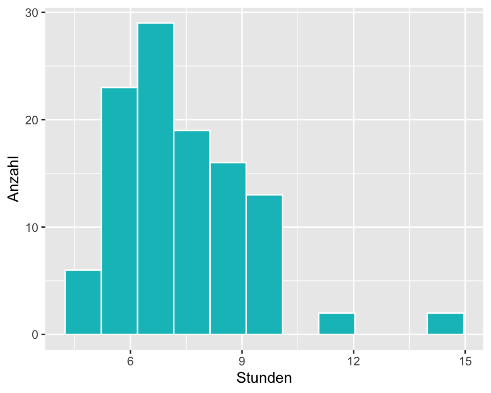
Bevor das Normalmodell für den Stichprobenmittelwert bei der Berechnung des 95%-Vertrauensintervalls verwendet werden darf, muss überprüft werden, ob die Voraussetzungen erfüllt sind:
- Da es eine Zufallstichprobe der Studierenden ist, sind die Beobachtungen unabhängig.
- Die Stichprobengrösse ist genügend gross (n > 30).
- Die Daten sind auf Grund der beiden Ausreisser bei 12 und 15 Stunden linkssteil verteilt. Bei einer Stichprobengrösse von 110 darf dies jedoch vernachlässigt werden.
Da die Voraussetzungen weitgehend erfüllt sind, darf angenommen werden, dass die Populationsdaten normalverteilt sind. Das 95% Konfidenzintervall berechnet man wie folgt:
n <- 110 # Stichprobenumfang
m <- 7.42 # Mittelwert der Stichprobe
s <- 1.75 # Standardabweichung des Mittelwerts der Stichprobe
SE <- s/sqrt(n) # Berechnung des Standardfehlers
CI95.lower <- round(m - 1.644854 * SE, 2) # gerundetes 95%-Vertrauensintervall berechnen
CI95.upper <- Inf
paste("95% CI = [", CI95.lower, "; ", CI95.upper, "]", sep = "")[1] "95% CI = [7.15; Inf]"Das einseitige CI geht bis unendlich, weil die obere Grenze nicht interessiert!
Prüfung mit dem 95%-Konfidenzintervall:
Das 95%-Vertrauensintervall für die durchschnittliche Schlafdauer der Schüler:innen beträgt \([7.15; \infty]\), d.h. wir können zu 95% darauf vertrauen, dass die wahre durchschnittliche Schlafdauer im Intervall \([7.15; \infty]\) liegt. Der Nullwert von 7 Stunden ist in diesem Vertrauensintervall nicht enthalten und wir verwerfen die \(H_0\) zugunsten der \(H_A\).
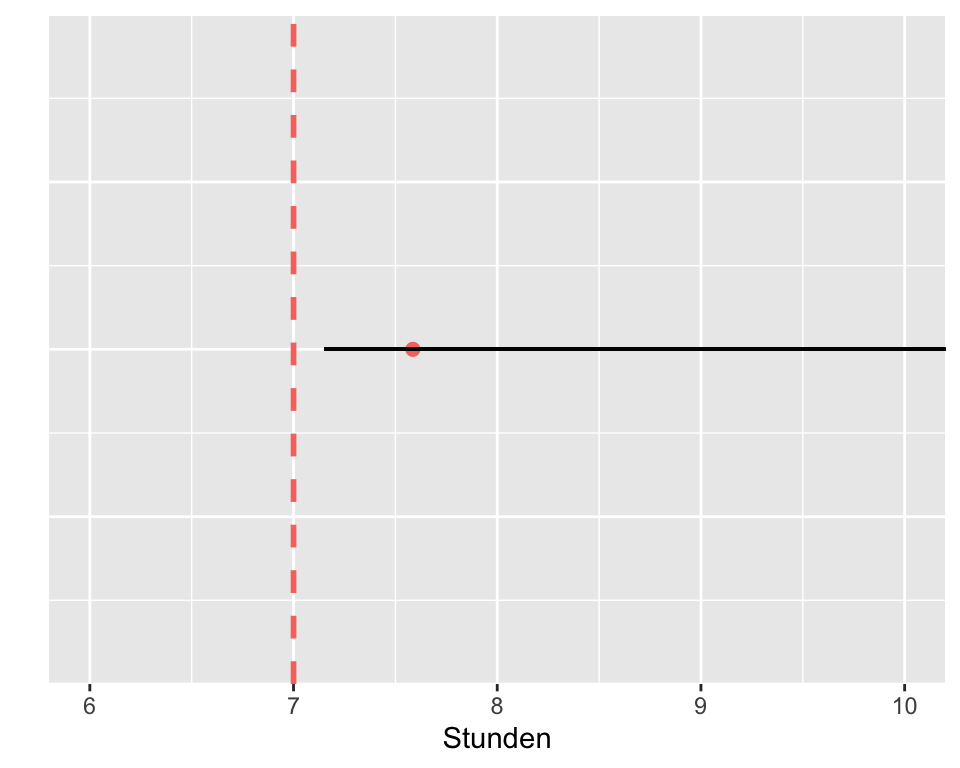
Prüfung mit dem P-Wert:
Wir überprüfen, ob unsere Daten mit der \(H_0\) vereinbar sind. Wir zeichnen die Verteilung unter der Nullhypothese (kann man auch von Hand skizzieren, ist sehr zu empfehlen) und berechnen den beobachteten Wert der Teststatistik \(T\), den \(z\)-Wert für den Mittelwert unserer Stichprobe.
\[z = \frac{\bar{x} - Nullwert}{SE} = \frac{7.42 - 7}{0.17} = 2.47\]
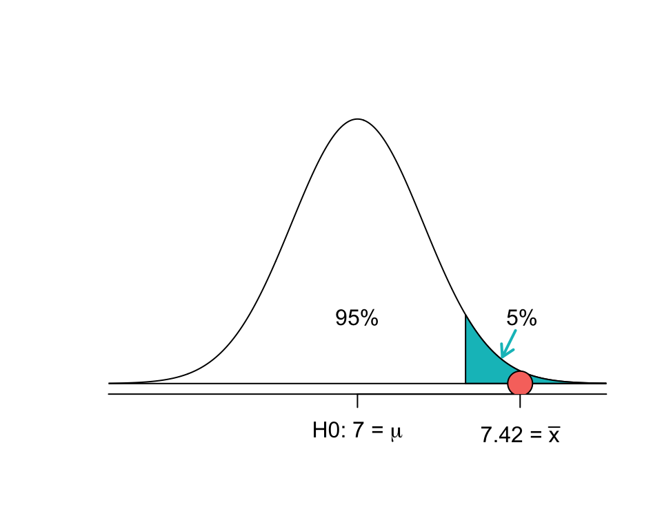
In der Abbildung 3.10 ist der obere 5%-Verwerfungsbereich blau markiert. Wenn \(H_A\) einseitig \(\mu > \mu_0\) formuliert ist und ein Wert in den oberen 5%-Bereich der Verteilung unter der Nullhypothese fällt, entscheiden wir gegen \(H_0\) (mit Irrtumswahrscheinlichkeit \(\alpha\) = 0.05).
Den P-Wert für \(z\) = 2.47 kann in einer \(z\)-Werte-Tabelle abgelesen werden oder - einfacher und genauer - mittels R berechnet werden.
pnorm(2.47)[1] 0.9932443Die Fläche unter der Kurve links von unserem Stichprobenmittelwert ist 0.993. Somit ist die verbleibende Fläche 1 - 0.993 = 0.007.
1 - pnorm(2.47)[1] 0.006755653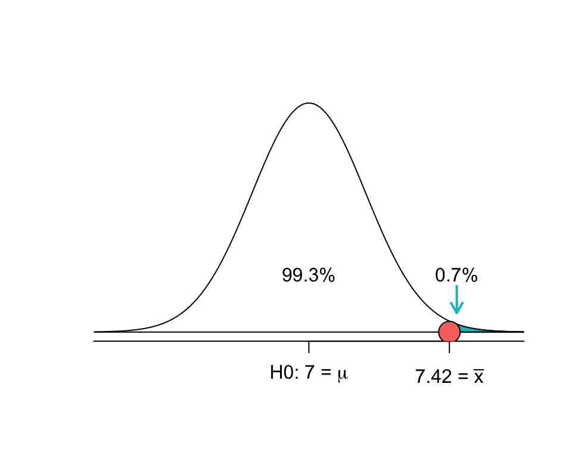
Interpretation: Wenn die Nullhypothese wahr ist, dann liegt die Wahrscheinlichkeit für einen Stichprobenmittelwert von 7.42 oder mehr Stunden für eine Stichprobe von 110 Schüler:innen bei nur \(p\) = 0.007, bzw. 0.7%. Wenn die Nullhypothese wahr wäre, würden wir ein solches Ergebnis nur sehr selten antreffen. Weil der P-Wert kleiner als das festgelegte Signifikanzniveau \(\alpha = 0.05\) ist, verwerfen wir die Nullhypothese zugunsten der Alternativhypothese und kommen zum Schluss, dass die Schülerinnen an dieser Schule im Durchschnitt länger als 7 Stunden schlafen.
3.11.2 Zweiseitige Hypothesentests
In einseitigen Tests interessieren wir uns für den Bereich der Verteilung in der Richtung der Alternativhypothese. Im vorangehenden Beispiel war dies \(H_A: \mu > 7\). Somit liegt unser Verwerfungsbereich rechts vom Mittelwert unter \(H_0\). Die Alternativhypothese kann auch in die andere Richtung zeigen \(H_A: \mu < 7\), dann liegt unser Verwerfungsbereich links vom Mittelwert unter \(H_0\).
Bei zweiseitigen Tests interessieren uns beide Seiten der Verteilung und die Alternativhypothese ist symmetrisch formuliert \(H_A: \mu \neq 7\). Diese Formulierung lässt offen, ob der empirische Mittelwert grösser oder kleiner als der postulierte Populationsmittelwert ist. Die Frage lautet dann: “Unterscheidet sich unserer Mittelwert vom Populationwert unter \(H_0\)?”.
Wie wir gesehen haben, hat die National Sleep Foundation festgestellt, dass Schülerinnen im Durchschnitt 7 Stunden schlafen. Eine andere Forschungsgruppe wollte wissen, ob sich die Schlafdauer der Schülerinnen an ihrer Schule von dieser Norm unterscheidet. Sie formulierten die Hypothesen:
\(H_0: \mu = 7\), die durchschnittliche Schlafdauer beträgt 7 Stunden.
\(H_A: \mu \neq 7\), die durchschnittliche Schlafdauer unterscheidet sich von 7 Stunden.
Diese zweite Gruppe hat randomisiert 122 Schülerinnen zu ihrer Schlafdauer befragt. Das Ergebnis war, dass die Schülerinnen an dieser Schule im Durchschnitt \(\bar{x}=6.83\) Stunden schlafen (s = 1.8 Stunden). Haben wir damit Evidenz gegen die Nullhypothese (\(\alpha = 0.05\))?
Prüfen der Voraussetzungen: (1) Eine Zufallsstichprobe der Schülerinnen bedeutet, dass die Beobachtungen unabhängig sind. (2) Der Stichprobenumfang ist grösser als 30. (3) Aufgrund der Überlegungen im letzten Beispiel können wir davon ausgehen, dass der Stichprobenumfang ausreichen gross ist, damit die Stichprobenmittelwerte normal verteilt sind.
Den Standardfehler SE berechnen:
n <- 122
m <- 6.83
s <- 1.8
SE <- s/sqrt(n)
SE[1] 0.1629643Der Standardfehler ist \(SE\) = 0.163.
- Eine Skizze erstellen:
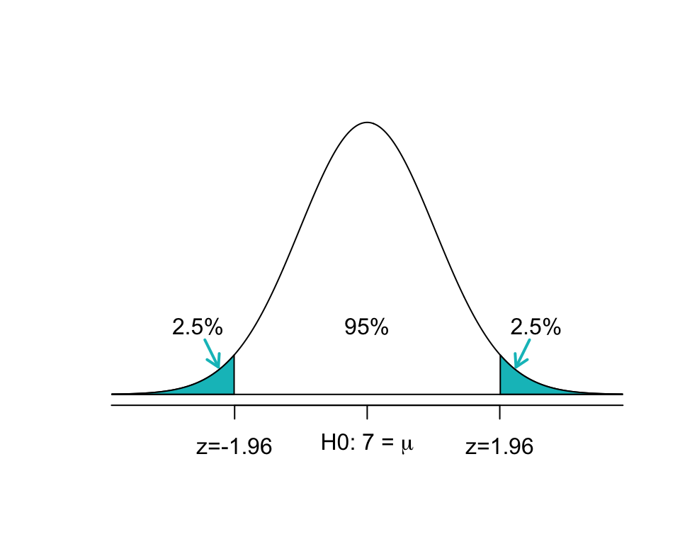
Da wir unsere Alternativhypothese zweiseitig formuliert haben, wird der Verwerfungsbereich auf 2.5% am unteren und 2.5% am oberen Ende der Verteilung aufgeteilt. Die Grenze zu den Verwerfungsbereichen liegt bei z=-1.96 und z=+1.96.
- Berechnung des \(z\)-Werts:
\[z = \frac{6.83 - 7}{0.16} = -1.06\]
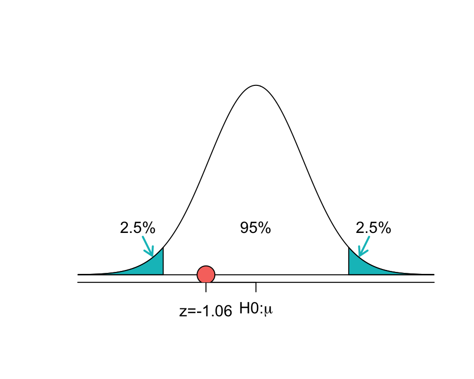
Der P-Wert für die linke Fläche bei \(z\) = -1.06 ist 0.145. Weil das Normalmodell symmetrisch ist, muss die rechte Hälfte die selbe Fläche haben wie die linke Fläche. Der P-Wert wird daher für die Summe beider Flächen berechnet:
linke_flaeche <- pnorm(-1.06) # Fläche <= -1.06
rechte_flaeche <- 1-pnorm(1.06) # Fläche >= 1.06
p <- linke_flaeche + rechte_flaeche
p[1] 0.2891446Ein P-Wert von 0.29 ist relativ gross (grösser als \(\alpha = 0.05)\) und wir haben keine Evidenz gegen \(H_0\). Das heisst, die Beobachtungen passen zum \(H_0\)-Modell. Das heisst, dass es unter \(H_0\) nicht aussergewöhnlich ist, wenn man einen Mittelwert erhält, der sich so wenig von 7 Stunden unterscheidet. \(H_0\) ist also durchaus plausibel. Die Ursache für die geringe Abweichung des Mittelwerts von 7 Stunden kann alleine auf der Stichprobenvariation beruhen.
3.11.3 Einseitige vs. zweiseitige Hypothesentests
Wir bevorzugen grundsätzlich die Verwendung von zweiseitigen Arbeitshypothesen. Warum? Einseitige Hypothesentests verdoppeln das Risiko, einen Fehler 1. Art zu begehen. Es ist unlautere wissenschaftliche Praxis, wenn nach der Datenerhebung eine zweiseitige Alternativhypothese zu einer einseitigen Alternativhypothese geändert wird, mit der Absicht, statistisch signifikante Effekte zu erhalten, weil solche eher publiziert werden als nicht signifikante Resultate. Deshalb müssen die Hypothesen bei der Registrierung von Studien immer vor der Datenerhebung deklariert werden.
3.12 Hypothesentests Schritt für Schritt
- Notiere die Hypothesen in Umgangssprache. Übersetze sie dann in mathematische Notation.
- Identifiziere die korrekte Prüfgrösse für die Fragestellung.
- Prüfe die Voraussetzungen für die Durchführung der Tests (Unabhängigkeit, \(n\) > 30, Normalverteilung)
- Berechne die Kennzahlen und den Standardfehler. Erstelle eine Skizze für die Verteilung unter \(H_0\). Markiere die Verwerfungsbereiche.
- Berechne den Wert der Teststatistik und den zugehörigen P-Wert.
- Berechne das 95%-Konfidenzintervall für den Populationsparameter.
- Schreibe eine Schlussfolgerung in einer Sprache, die auch für Nichtstatistiker:innen verständlich ist. Vermeide es, nur einen P-Wert ohne Kennzahlen für Punktschätzer und 95%-Konfidenzintervall anzugeben.
3.13 Statistische Signifikanz versus praktische Relevanz
Eine Konsequenz des Wurzel-n-Gesetzes ist es, dass es bloss eine Frage des Stichprobenumfangs ist, ob auch kleine Effekte statistisch signifikant werden. Die Aussage, dass ein Ergebnis statistisch signifikant ist, bedeutet nicht, dass es auch von praktischer Bedeutung ist. In den Gesundheitsberufen müssen wir einen Effekt immer in Bezug zur MCID (minimal clinical important difference) setzen, sofern dieser bekannt ist.
Beispiel: In einer Studie wird der Effekt einer neuen Behandlung auf das subjektive Schmerzempfinden bei Rückenschmerzpatienten gemessen. Die Intervention ist vielversprechend aber auch wesentlich teurer, als die bisherige Standardbehandlung. Das Studiendesign entspricht einer randomisierten kontrollierten Studie (RCT). Die Kontrollgruppe erhält die bisherige Standardbehandlung, die Interventionsgruppe erhält die neue Behandlung. Gemessen wird der Effekt der Behandlungen auf die subjektiven Schmerzen auf einer VAS-Skala von 0 bis 10. Die Studie kommt zum Schluss, dass die Intervention im Durchschnitt eine signifikante Verbesserung bei der Interventionsgruppe gegenüber der Kontrollgruppe von VAS -0.9 [-1.1; -0.7] mit p < 0.05 ergibt. Auf Grund dieser Ergebnisse stellt sich die Frage, ob die alte Behandlung aufgegeben und durch die neue ersetzt werden muss. Um diese Frage zu beantworten, müssen wir wissen, wie gross der Effekt einer Behandlung sein muss, damit die Patientinnen subjektiv eine Verbesserung ihrer Schmerzen wahrnehmen. Eine Suche in der Literatur ergibt, dass die MCID (minimal clinical important difference) bei einer Reduktion der VAS um -2 liegt. Mit anderen Worten: Die neue Intervention mag zwar eine statistisch signifikante Verbesserung von VAS -1.5 bewirken, für die Patient:innen ist das aber nicht von Bedeutung (nicht klinisch relevant), weil sie subjektiv erst ab einer Reduktion der VAS um -2 einen Effekt und damit eine Verbesserung ihrer Lebensqualität wahrnehmen. Vor allem in Anbetracht der zusätzlichen Kosten der neuen Intervention, besteht keine Evidenz dafür, dass diese die bisherige Standardtherapie ersetzen sollte (Ostelo and Vet 2005).